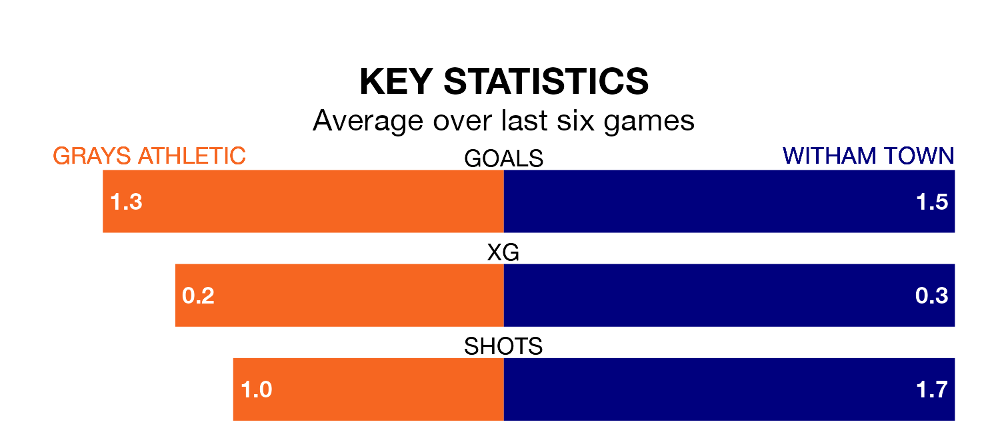

Grays Athletic welcome Witham Town to the Mill Field on late Wednesday looking to pick up points to end their three-game losing streak.
Grays's struggles have left them with six points from their last six Isthmian League – Division One North matches, while their opponents have earned seven from a possible 18.
Grays are 18th in the table after 17 games, of which they have won two and drawn five, earning 11 points.
Witham are seven places ahead of Athletic in 11th, with five wins and six draws putting them on 21 points.
With 19 goals in 17 games so far this season, the home team are scoring at below the league average rate with 1.1 goals per game. And they are conceding more than average, letting in 33 goals at a rate of 1.9 per game.
Town are also below average scorers, with 1.4 goals per game, compared to a league average of 1.7. They have conceded 1.7 goals per game.
In the last five years, Grays and Witham have played each other on five occasions. They won two each, and they drew once.
On average, Grays scored 2.4 goals and Witham 1.4 in those matches.
Their last meeting was on December 26 2022, when Grays won 7-1 at home.
Grays's last match was on January 1, a 1-0 loss against Maldon and Tiptree.
Witham lost 2-0 against Bowers and Pitsea last time out, on Saturday.
Updated: 15:34, 08/01/24